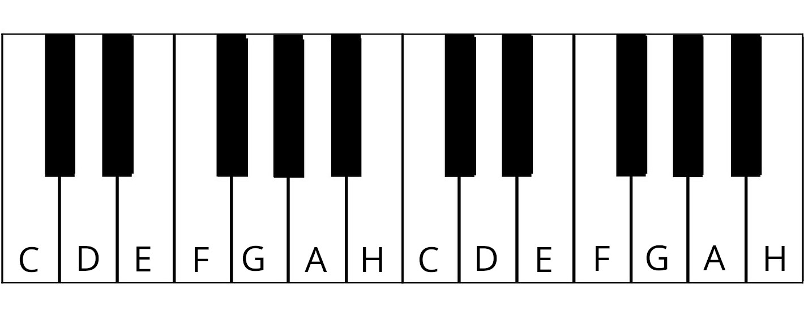
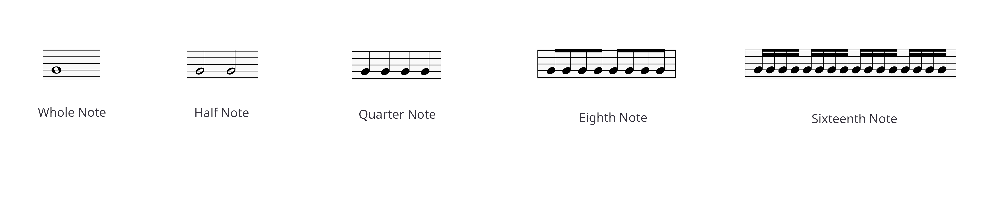
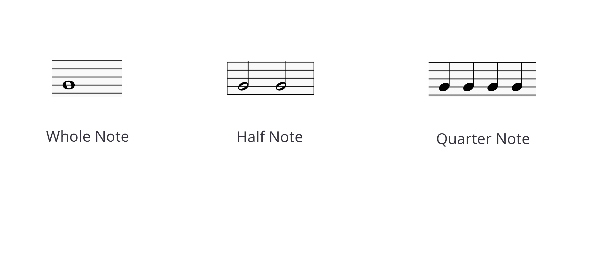
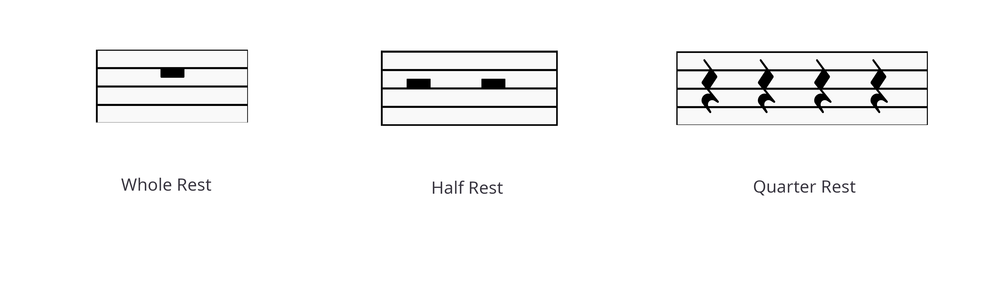
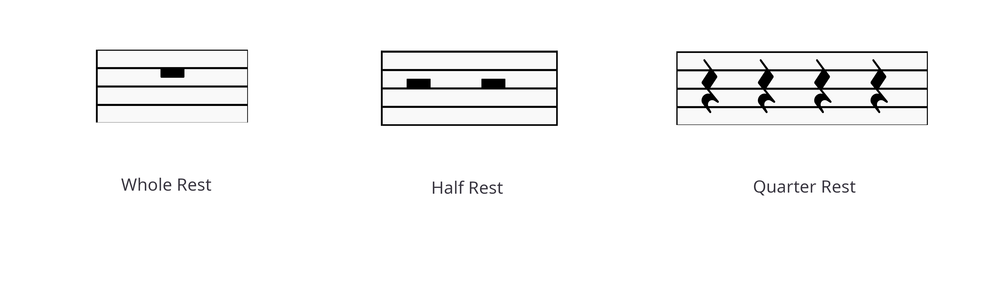

Capítulos
¿Cómo leer partituras? Valores de las Notas Pausas Musicales Claves Compases Semitonos y Tonos Alteraciones ¿Cómo practicar la lectura de partituras? Juego¿Cómo leer partituras?
Cada nota tiene un nombre y una tecla específica en el piano. La asignación de las notas musicales a las teclas del piano se realiza de manera lógica de derecha a izquierda:

Aquí tienes una visión general de las teclas en el teclado:
Intenta tocar la siguiente melodía muy lentamente con la mano derecha. Ayúdate con esta imagen. Los números debajo de las notas indican el dedo con el que debes tocar la nota:
| Pulgar | 1 |
| Índice | 2 |
| Medio | 3 |
| Anular | 4 |
| Meñique | 5 |
Valores de las Notas
Los valores de las notas en el piano se refieren a la duración durante
la cual una nota se mantiene o se toca. Cada valor de nota tiene una
duración específica en relación con el compás de la música, que está
determinado por la
firma del compás. Aquí tienes una visión general de los valores de nota más comunes:
1. Nota Entera
- Símbolo: Un óvalo abierto sin plica.
- Duración: El valor de nota más largo, que dura cuatro tiempos en un compás de 4/4.
- En el piano: Mantén la tecla presionada durante cuatro tiempos.
2. Nota Media
- Símbolo: Un óvalo abierto con plica.
- Duración: Dura dos tiempos en un compás de 4/4.
- En el piano: Presiona y mantén la tecla durante dos tiempos.
3. Nota Cuartena
- Símbolo: Un óvalo relleno con plica.
- Duración: Dura un tiempo en un compás de 4/4.
- En el piano: Presiona y mantén la tecla durante un tiempo.
4. Nota Corchea
- Símbolo: Un óvalo relleno con plica y una banderita.
- Duración: Dura medio tiempo en un compás de 4/4.
- En el piano: Presiona y mantén la tecla durante medio tiempo. A menudo se tocan en pares o grupos.
5. Nota Cabezona
- Símbolo: Un óvalo relleno con plica y dos banderitas.
- Duración: Dura un cuarto de tiempo en un compás de 4/4.
- En el piano: Presiona y mantén la tecla durante un cuarto de tiempo. Estas notas suelen tocarse rápidamente.
6. Notas con Punto
- Símbolo: Un punto que sigue a una nota.
- Efecto: El punto prolonga la duración de la nota en la mitad de su valor original.
- Ejemplo: Una nota media con punto dura tres tiempos (dos tiempos para la nota media + un tiempo adicional).
7. Notas Ligadas
- Símbolo: Una línea curva que conecta dos notas del mismo tono.
- Efecto: Las notas se tocan como una sola nota con duración combinada.
- En el piano: Mantén la tecla durante toda la duración de las notas ligadas.
Aquí tienes una visión general de los valores de las notas:
 
Todos los fragmentos musicales mostrados anteriormente (Nota Entera, Nota Media, Nota Cuartena, Nota Corchea, Nota Cabezona) requieren el mismo tiempo para tocar (cuatro tiempos).
Pausas Musicales
- Pausa Entera: Silencio durante cuatro tiempos.
- Pausa Media: Silencio durante dos tiempos.
- Pausa Cuartena: Silencio durante un tiempo.
- Pausa Corchea: Silencio durante medio tiempo.
- Pausa Cabezona: Silencio durante un cuarto de tiempo.
Los símbolos de pausa indican silencio y tienen equivalentes a los valores de notas correspondientes:
 


La notación y duración de las pausas son las mismas que las de los valores de las notas. Son importantes para interpretar correctamente el ritmo de una pieza.
Claves
La clave indica cómo se deben leer las notas en el pentagrama. Las claves más importantes son:
1. Clave de Sol
- Indica que las notas en el pentagrama se leen en la tonalidad alta.
- Se utiliza principalmente para la mano derecha en el piano.
- Aquí se encuentra la nota Sol en la segunda línea desde abajo.
2. Clave de Fa
- Indica que las notas en el pentagrama se leen en la tonalidad baja.
- Se utiliza principalmente para la mano izquierda en el piano.
- Aquí se encuentra la nota Fa en la cuarta línea desde abajo.
3. Clave de Do y Clave de Tenor
- Menos común en el piano, pero importante para otros instrumentos.
- La Clave de Do indica la nota Do en la tercera línea desde abajo.
- La Clave de Tenor indica la nota Do en la cuarta línea desde abajo.

Compases
La firma del compás determina cuántos tiempos hay por compás y qué valores de notas reciben un tiempo:
- Compás 4/4: Cuatro tiempos por compás, cada tiempo es una nota cuartena.
- Compás 3/4: Tres tiempos por compás, cada tiempo es una nota cuartena. Conocido en los valses.
- Compás 2/4: Dos tiempos por compás, cada tiempo es una nota cuartena.
- Compás 6/8: Seis tiempos por compás, cada tiempo es una nota corchea.

La firma del compás establece la estructura de la pieza musical y afecta el ritmo y el acento.
Semitonos y Tonos
En el piano, los pasos entre las teclas se dividen en semitonos y tonos:
- Un Semitono: La distancia más pequeña entre dos teclas adyacentes en el piano.
- Un Tono: Dos semitonos, por ejemplo, de Do a Re.

El reconocimiento de semitonos y tonos es crucial para entender la teoría musical y la armonía del piano.
Alteraciones
Las alteraciones cambian la altura de una nota y son importantes para la interpretación correcta de la música:
- Sostenido (#): Eleva la nota un semitono.
- Bemol (b): Baja la nota un semitono.
- Doble sostenido (x): Eleva la nota dos semitonos.
- Doble bemol (bb): Baja la nota dos semitonos.

Las alteraciones son necesarias para asegurar la altura correcta de las notas y para mostrar cambios dentro de una pieza.
¿Cómo practicar la lectura de partituras?
Practicar la lectura de partituras requiere paciencia y perseverancia:
- Comienza con piezas simples y avanza a otras más complejas.
- Practica regularmente para mejorar tus habilidades.
- Utiliza hojas de ejercicios y herramientas para evaluar tus habilidades.
- Toca las notas a diferentes velocidades para mejorar tu ritmo.
Una herramienta útil para practicar es el juego de lectura de notas.
Juego
El juego de lectura de notas es una herramienta interactiva para mejorar tus habilidades de lectura de notas:
- Plantea preguntas de notas al azar.
- Puedes seleccionar la tecla correcta en el piano.
- Proporciona retroalimentación y puntos por respuestas correctas.